用法：A型题点选项即判；X型题先多选、再点【判卷】；答完自动展开解析。刷完本课再过一遍底部【本课速记卡】，效果最好。
一、概述（分类）5 题
A型·单选Q1P1 · 概述
大叶性肺炎的炎症性质是
答案与解析
答案：C
大叶性肺炎＝肺泡的纤维素性炎（累及肺泡）。
📖 讲义定位：P1 · 概述
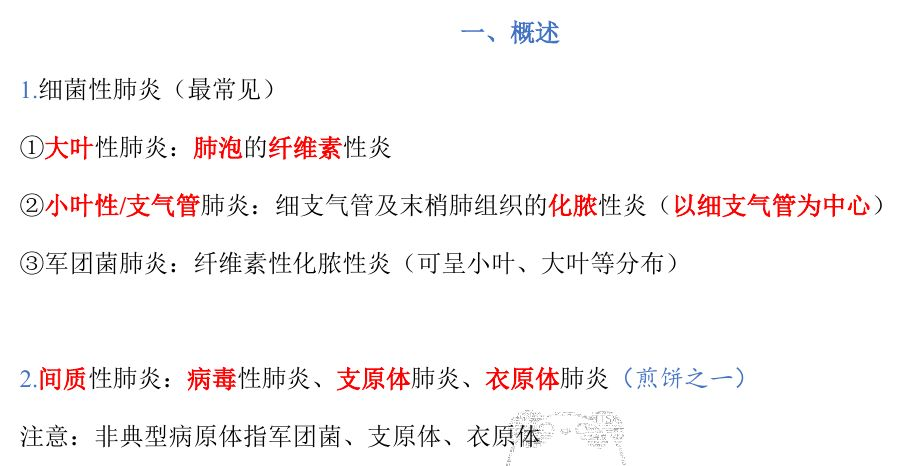
📷 讲义原图 · P1 · 概述
A型·单选Q2P1 · 概述
小叶性（支气管）肺炎的炎症性质是
答案与解析
答案：A
小叶性/支气管肺炎＝细支气管及末梢肺组织的化脓性炎（以细支气管为中心）。
📖 讲义定位：P1 · 概述
A型·单选Q3P1 · 概述
下列属于间质性肺炎的是
答案与解析
答案：B
间质性肺炎：病毒性肺炎、支原体肺炎、衣原体肺炎。
📖 讲义定位：P1 · 概述
A型·单选Q4P1 · 概述
医学上称为『非典型病原体』的是
答案与解析
答案：D
非典型病原体＝军团菌、支原体、衣原体。
📖 讲义定位：P1 · 概述
A型·单选Q5P1 · 概述
军团菌肺炎的炎症性质是
答案与解析
答案：C
军团菌肺炎：纤维素性化脓性炎（可呈小叶、大叶等分布）。
📖 讲义定位：P1 · 概述
二、大叶性肺炎7 题
A型·单选Q6P2 · 大叶性肺炎
大叶性肺炎的常见病原体及好发人群是
答案与解析
答案：A
肺炎链球菌等多见、好发于青壮年。
📖 讲义定位：P2 · 大叶性肺炎
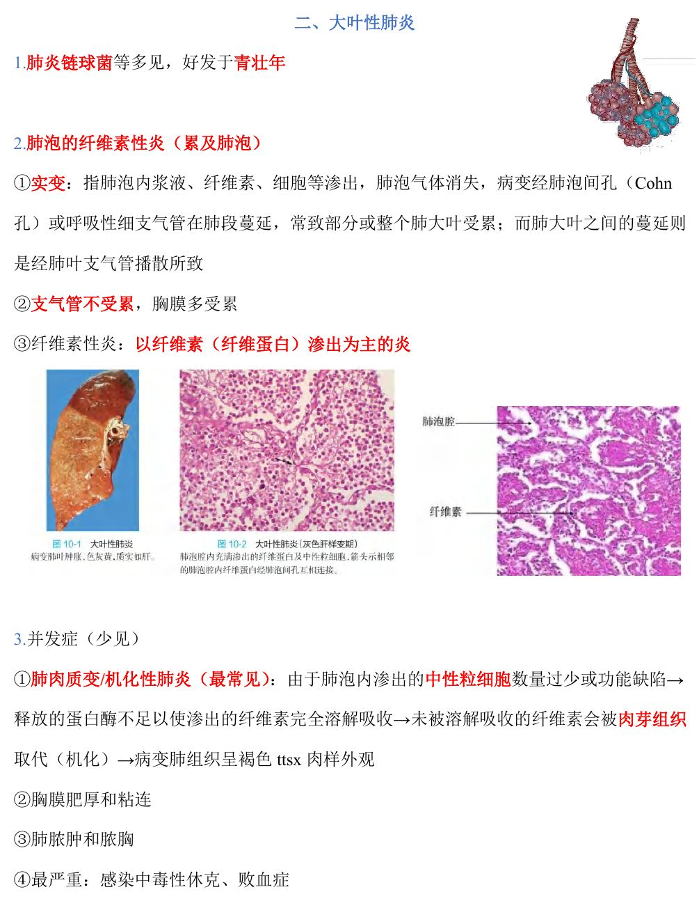
📷 讲义原图 · P2 · 大叶性肺炎
A型·单选Q7P2 · 大叶性肺炎
大叶性肺炎的病变在肺段内蔓延主要经
答案与解析
答案：D
经肺泡间孔（Cohn 孔）或呼吸性细支气管在肺段蔓延；而肺大叶之间的蔓延则经肺叶支气管播散。
📖 讲义定位：P2 · 大叶性肺炎
A型·单选Q8P2 · 大叶性肺炎
关于大叶性肺炎，下列叙述正确的是
答案与解析
答案：B
大叶性肺炎：肺泡受累、支气管不受累、胸膜多受累（实变＝肺泡内浆液、纤维素、细胞等渗出，肺泡气体消失）。
📖 讲义定位：P2 · 大叶性肺炎
A型·单选Q9P2 · 大叶性肺炎
大叶性肺炎最常见的并发症是
答案与解析
答案：C
并发症（少见）中最常见：肺肉质变（机化性肺炎）。
📖 讲义定位：P2 · 大叶性肺炎
A型·单选Q10P2 · 大叶性肺炎
肺肉质变的形成机制是
答案与解析
答案：A
中性粒细胞过少或功能缺陷→蛋白酶不足以溶解纤维素→未溶解的纤维素被肉芽组织取代（机化）→病变肺组织呈褐色肉样外观。
📖 讲义定位：P2 · 大叶性肺炎
A型·单选Q11P2 · 大叶性肺炎
大叶性肺炎最严重的并发症是
答案与解析
答案：D
最严重：感染中毒性休克、败血症。
📖 讲义定位：P2 · 大叶性肺炎
X型·多选Q12P2 · 大叶性肺炎
关于大叶性肺炎，下列叙述正确的有
答案与解析
答案：BCD
A 错：大叶性肺炎累及肺泡、不累及支气管。
📖 讲义定位：P2 · 大叶性肺炎
三、小叶性肺炎5 题
A型·单选Q13P3 · 小叶性肺炎
小叶性肺炎的好发人群是
答案与解析
答案：B
金葡菌等引起、好发于久病卧床者、老年人、婴幼儿、体弱者；常为某些疾病（麻疹后/术后/吸入性/坠积性肺炎等）的并发症。
📖 讲义定位：P3 · 小叶性肺炎
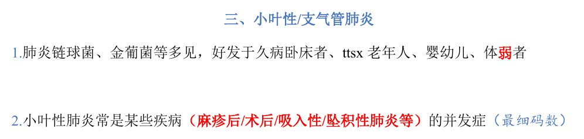
📷 讲义原图 · P3 · 小叶性肺炎
A型·单选Q14P3 · 小叶性肺炎
小叶性肺炎的病变以什么为中心
答案与解析
答案：B
小叶性肺炎是细支气管及末梢肺组织的化脓性炎（以中性粒细胞渗出为主），以细支气管为中心。
📖 讲义定位：P3 · 小叶性肺炎
A型·单选Q15P3 · 小叶性肺炎
小叶性肺炎的病变分布特点和典型影像表现是
答案与解析
答案：D
小叶性肺炎多累及下叶和背侧；X 线多表现为双肺下叶不规则斑片影。
📖 讲义定位：P3 · 小叶性肺炎
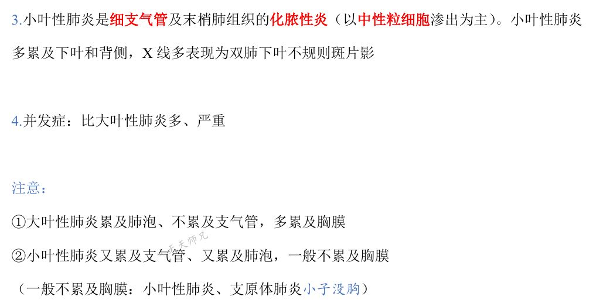
📷 讲义原图 · P3 · 小叶性肺炎
A型·单选Q16P3 · 小叶性肺炎
与大叶性肺炎相比，小叶性肺炎的并发症
答案与解析
答案：A
小叶性肺炎并发症比大叶性肺炎多、严重。
📖 讲义定位：P3 · 小叶性肺炎
X型·多选Q17P3 · 小叶性肺炎
关于小叶性肺炎，下列叙述正确的有
答案与解析
答案：ABD
C 错：小叶性肺炎一般不累及胸膜（『小子没胸』——小叶性肺炎、支原体肺炎一般不累及胸膜）。
📖 讲义定位：P3 · 小叶性肺炎
四、病毒性肺炎7 题
A型·单选Q18P3 · 病毒性肺炎
病毒性肺炎的病理类型属于
答案与解析
答案：C
病毒性肺炎是间质性肺炎。
📖 讲义定位：P3 · 病毒性肺炎
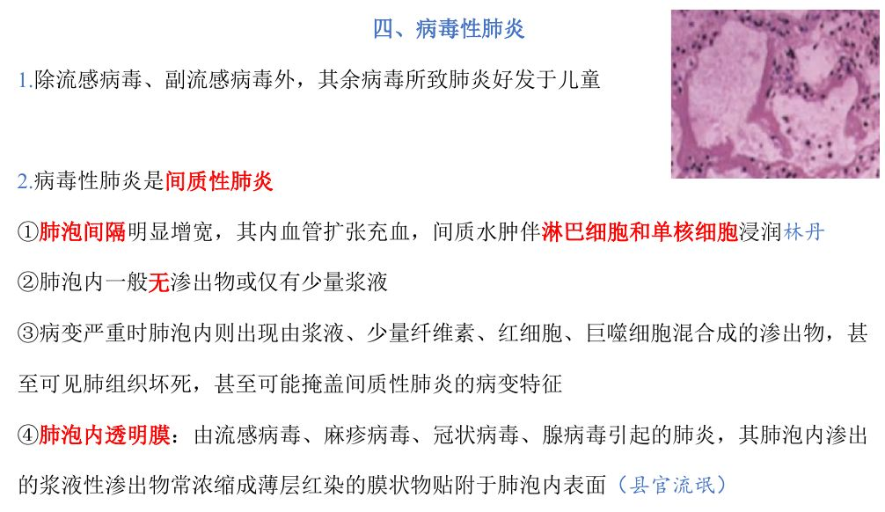
📷 讲义原图 · P3 · 病毒性肺炎
A型·单选Q19P3 · 病毒性肺炎
除流感病毒、副流感病毒外，其余病毒所致肺炎好发于
答案与解析
答案：C
除流感病毒、副流感病毒外，其余病毒所致肺炎好发于儿童。
📖 讲义定位：P3 · 病毒性肺炎
A型·单选Q20P3 · 病毒性肺炎
病毒性肺炎的典型镜下表现为
答案与解析
答案：B
间质性肺炎改变：肺泡间隔增宽、间质水肿伴淋巴细胞和单核细胞浸润；肺泡内一般无渗出物或仅有少量浆液。
📖 讲义定位：P3 · 病毒性肺炎
A型·单选Q21P3 · 病毒性肺炎
肺泡内『透明膜』主要见于
答案与解析
答案：D
由流感病毒、麻疹病毒、冠状病毒、腺病毒引起的肺炎，其肺泡内浆液性渗出物浓缩成薄层红染膜状物贴附于肺泡内表面（透明膜）。
📖 讲义定位：P3 · 病毒性肺炎
A型·单选Q22P4 · 病毒性肺炎
病毒包涵体的形态特点是
答案与解析
答案：A
病毒包涵体呈圆形或椭圆形，周围常有清晰透明晕/空晕；位于增生的上皮细胞和多核巨细胞内——是病毒性肺炎的病理诊断依据。
📖 讲义定位：P4 · 病毒性肺炎
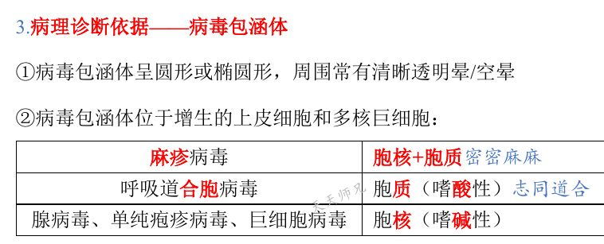
📷 讲义原图 · P4 · 病毒性肺炎
A型·单选Q23P4 · 病毒性肺炎
病毒包涵体位于胞质（嗜酸性）的病毒是
答案与解析
答案：A
位置记忆：麻疹病毒（胞核＋胞质）、呼吸道合胞病毒（胞质，嗜酸性）、腺病毒/单纯疱疹病毒/巨细胞病毒（胞核，嗜碱性）。
📖 讲义定位：P4 · 病毒性肺炎
X型·多选Q24P3–4 · 病毒性肺炎
关于病毒性肺炎，下列叙述正确的有
答案与解析
答案：BCD
A 错：大量中性粒细胞渗出是化脓性炎（小叶性肺炎）的特点；病毒性肺炎以间质淋巴细胞、单核细胞浸润为特点。
📖 讲义定位：P3–4 · 病毒性肺炎
本课速记卡
肺炎分类（性质要记牢）
- 大叶性肺炎：肺泡的纤维素性炎（累及肺泡）
- 小叶性/支气管肺炎：细支气管及末梢肺组织的化脓性炎（以细支气管为中心）
- 军团菌肺炎：纤维素性化脓性炎
- 间质性肺炎：病毒性、支原体、衣原体（非典型病原体＝军团菌、支原体、衣原体）
大叶性肺炎要点
- 肺炎链球菌多、青壮年；实变经肺泡间孔（Cohn 孔）/呼吸性细支气管蔓延；肺叶间经肺叶支气管
- 累及肺泡、不累及支气管，多累及胸膜
- 并发症：肺肉质变（最常见；中性粒细胞过少→纤维素未溶解→机化→褐色肉样）、胸膜肥厚粘连、肺脓肿和脓胸、感染中毒性休克（最严重）
小叶性肺炎要点
- 金葡菌等；久病卧床/老年/婴幼儿/体弱者；常为并发症（麻疹后/术后/吸入性/坠积性）
- 化脓性炎（中性粒细胞为主）、以细支气管为中心；多累及下叶和背侧（双肺下叶斑片影）
- 并发症比大叶性肺炎多、严重；一般不累及胸膜（『小子没胸』）
病毒性肺炎要点
- 间质性肺炎：肺泡间隔增宽、水肿，淋巴和单核细胞浸润；肺泡内一般无渗出
- 透明膜：流感、麻疹、冠状病毒、腺病毒——浆液渗出浓缩成红染膜状物
- 包涵体：圆形/椭圆、周围透明晕；麻疹（核＋质）、呼吸道合胞（胞质）、腺/单纯疱疹/巨细胞（胞核）
📚 网站题库（导入）5 组 · 12 题
说明：本部分为外部题库导入（来源：「西综题库」网站 · 病理学），题干、选项与答案保留原样；标注「教师补充」的答案未经讲义逐项复核。做题方式：点字母选择（多选后点【判卷】；答案可点开「答案与出处」查看）。
细菌性肺炎与间质性肺炎B型题
A 军团菌肺炎
B 病毒性肺炎
C 大叶性肺炎
D 支原体肺炎
E 小叶性/支气管肺炎
F 衣原体肺炎
网站题W1第14讲 · 第1页
细菌性肺炎
答案与出处
答案：ACE
📖 第14讲 · 第1页
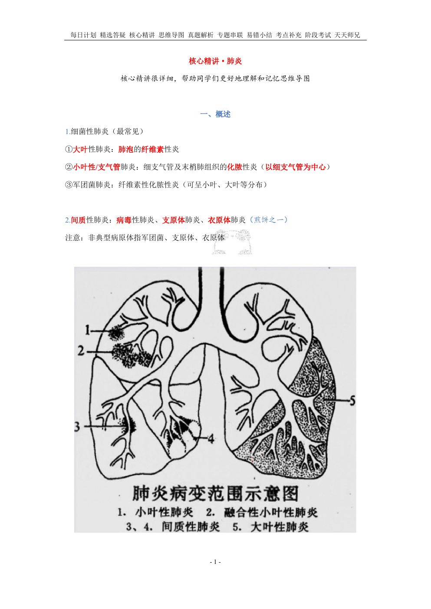
📷 讲义原图 · 第14讲 · 第1页
网站题W2第14讲 · 第1页
间质性肺炎
答案与出处
大叶性、小叶性与军团菌肺炎B型题
A 肺泡的纤维素性炎
B 细支气管及末梢肺组织的化脓性炎
C 可呈小叶、大叶等分布
D 以细支气管为中心
E 纤维素性化脓性炎
网站题W3第14讲 · 第1页
大叶性肺炎
答案与出处
网站题W4第14讲 · 第1页
小叶性/支气管肺炎
答案与出处
网站题W5第14讲 · 第1页
军团菌肺炎
答案与出处
病毒包涵体的位置B型题
A 胞核+胞质
B 胞质（嗜酸性）
C 胞核（嗜碱性）
网站题W6第14讲 · 第4页
单纯疱疹病毒
答案与出处
答案：C
📖 第14讲 · 第4页
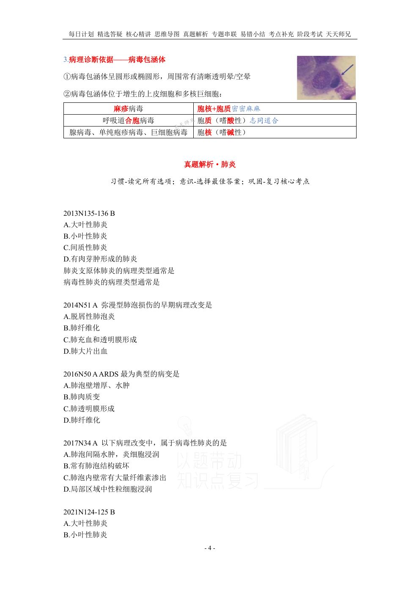
📷 讲义原图 · 第14讲 · 第4页
网站题W7第14讲 · 第4页
呼吸道合胞病毒
答案与出处
网站题W8第14讲 · 第4页
麻疹病毒
答案与出处
网站题W9第14讲 · 第4页
腺病毒
答案与出处
网站题W10第14讲 · 第4页
巨细胞病毒
答案与出处
在大叶性肺炎的灰色肝样变期,肺泡腔内主要为单项选择教师补充
A 浆液和中性粒细胞
B 浆液和红细胞
C 纤维素和中性粒细胞
D 纤维素和红细胞
网站题W11第14讲 · 第3页
在大叶性肺炎的灰色肝样变期,肺泡腔内主要为(单选)
答案与出处
答案：C
📖 第14讲 · 第3页
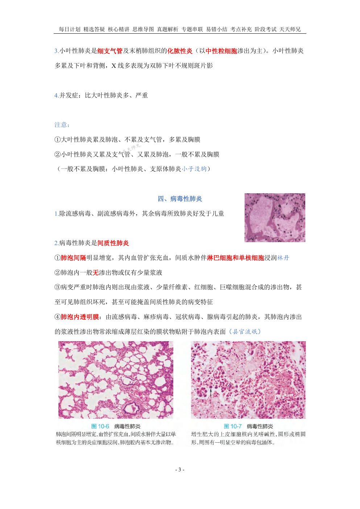
📷 讲义原图 · 第14讲 · 第3页
以下关于小叶性肺炎的描述,正确的有多项选择教师补充
A 病变仅局限于一个肺小叶
B 病变常累及胸膜
C 肺实变体征不明显
D 肺泡内可有中性粒细胞
网站题W12第14讲 · 第3页
以下关于小叶性肺炎的描述,正确的有(多选)
答案与出处
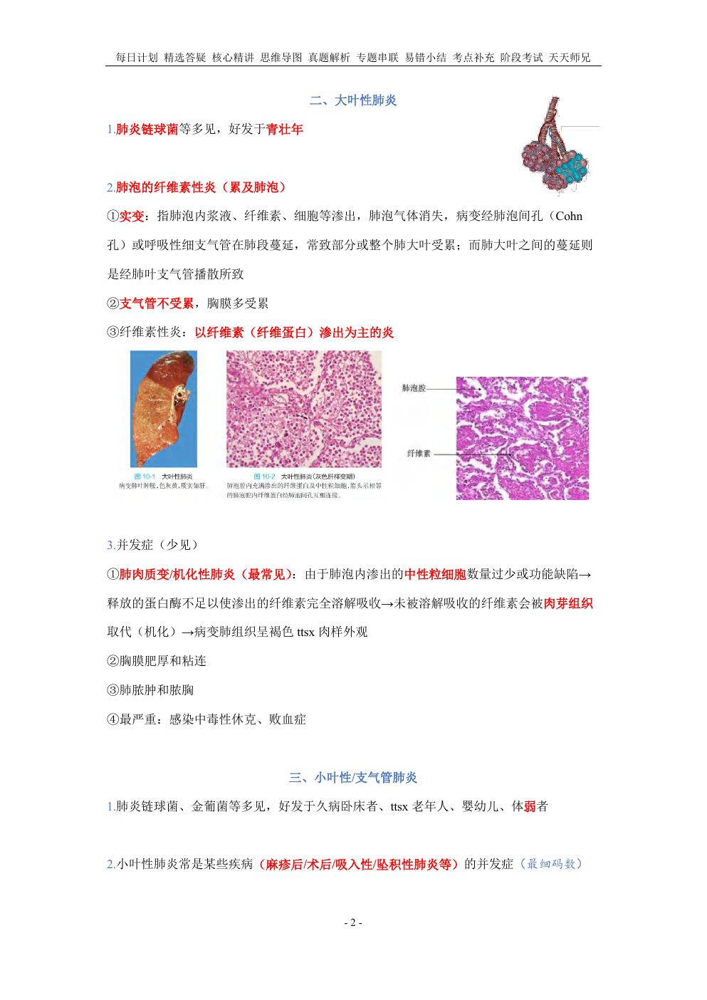
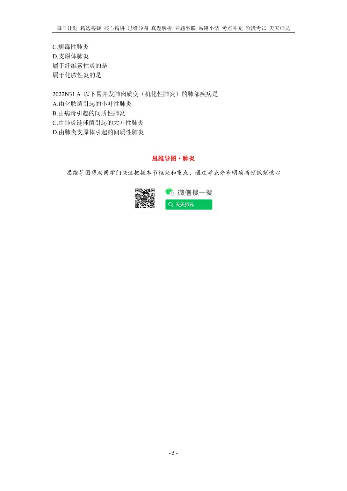